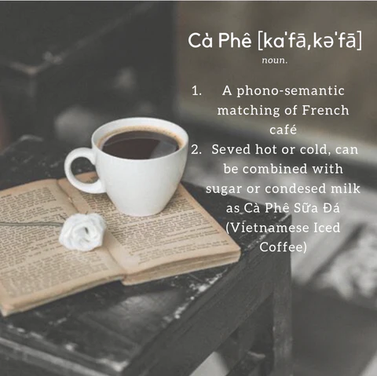

Vietnamese Coffee

Description
Ingredients
- 3 spoons of Coffee Powder
- 1 can of condensed milk
- Hot Water
How to Make:
-
Add 3 spoons of coffee powder into the chamber of the drip filter.
Place the drip filter over the cup and tap the chamber to even out the coffee powder before compressing the top strainer lightly.
- Add a little hot water (96-100ᵒC) into the chamber slowly to moisten the coffee powder.
Wait for approximately 20 seconds before filling up the chamber with hot water.
- Place the cap and wait for approximately 5-7 minutes for the water to drip through the filter. Lift the cap to check on the progress.
Do take note that in order to capture the coffee essence, water has to be dripped slowly.
- 1. Ca-phe Sua: (Vietnamese Coffee with Condensed milk): add 2-3 spoons of Condensed Milk. Our favorite is Southern Star Condensed Creamer (add hyper link to our sku), which boosts the creamier flavor of cream milk to the bitter sweet coffee.
2. Ca-phe Den (Vietnamese Coffee without Condensed Milk): add 2-3 spoon of sugar if you want to sweeten the taste of the coffee.
3. Both coffee style can be taken with or without ice, up to your taste.